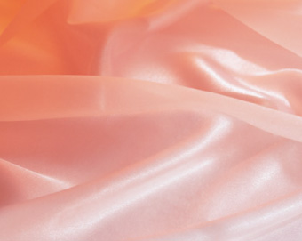

当社差別化原糸を軸にした素材開発を進め、高付加価値機能の追及を行い、裏地からファッション、スポーツ、ユニフォーム等の幅広い分野でお客様のニーズにお応えします。

| アクアウェーブ® | 「アクアウェーブ」は、Ｍ型断面ポリエステルフィラメント「アクアウェーブ」を使用した素材で、縫製時の滑脱防止性に優れ、吸水速乾性、ハリ・コシ性、ゆるやかなストレッチ性のある素材です。 |
|---|---|
| アクアステルス® | 「アクアステルス」は、Y型断面ポリエステルフィラメント「ソアリオンY」を使用した吸水・速乾性を特長とするテキスタイル素材です。 |
| イオヴェール® | 「イオヴェール」は、赤外線透過防止テキスタイル素材です。赤外線カメラでの透撮を防ぎます。 |
| エスパンディ® | 「エスパンディ」は、 サイドバイサイド型ポリエステルフィラメント「エスパンディ」を使用したストレッチ性に優れたソフトな素材です。 |
| エスパンシオーネ® | 「エスパンシオーネ」は、ポリウレタン100％の伸縮性不織布です。 従来の不織布の特性である通気性・透湿性やハンドリング性に加え、高い伸縮性さらには低発塵性など多くの優れた特性を有しています。 |
| エスパンシオーネ® FF | 「エスパンシオーネFF」は、無溶媒で熱接着可能なポリウレタン不織布です。素材の風合いを損なわず、伸縮性・通気性を維持し多種多様な素材との接着が可能です。 |
| オージェ® | 「オージェ」は、裏地用帯電防止ポリエステルテキスタイルです。導電糸を目立ちにくくしたきれいな表面感の裏地です。後加工ではないため、洗濯耐久性にも優れています。 |
| 軽密® | 「軽密」は、細繊度フルダルポリエステルフィラメント「ヴェガ」を使用し、軽量化を実現した高密度ポリエステル織物です。透湿性や防風・撥水性能も備え、独特な光沢感、ドレープ性があり、風合いが非常にソフトで着用感も快適です。 |
軽密®ニット |
「軽密ニット」は、細繊度フルダルポリエステルフィラメント「ヴェガ」を使用し、驚異の軽量化を実現した高密度ポリエステルニットです。風合いが非常にソフトでドレープ性に優れ、着用感も快適です。 |
| シエスタ® | 「シエスタ」は、適度なシャリ感とふくらみを備え多彩な表面効果を持ち、ナチュラル感のあるソフトな風合い、一味違ったタッチ感、優れた吸水性・拡散性・通気性を兼ね備えたテキスタイルです。 |
| シャダン® | 「シャダン」は、遮熱ポリエステルフィラメント「イレイド」を使用した、遮熱効果、UVカット効果のあるテキスタイルです。 |
ソアフル® |
「ソアフル」は、異収縮混繊ポリエステルフィラメントを使用した、適度なふくらみ感とドレープ性、なめらかな風合いを実現した上品な光沢をもつテキスタイルです。 |
| ドーデン® | 「ドーデン」は、導電性フィラメント「ベルトロン」とポリエステルを交編・交織した帯電防止テキスタイルです。繊維上や人体への帯電防止に役立ちます。 |
| フィールサーモ® | 「フィールサーモ」は、赤外線吸収ポリエステル蓄熱フィラメント「フレサーモ」を使用したテキスタイルです。赤外線を吸収し熱に変換することで衣服内の温度を上昇させます。 |
| ベルカップル® | 「ベルカップル」は、芯鞘型熱融着ポリエステルフィラメント「ベルカップル」を使用したヒートシール性（目ズレ防止）、 形態安定性に優れた素材です。 |
| ベルキュア®AS | 「ベルキュアAS」は、消臭加工ポリエステルテキスタイルです。繊維が臭気成分と触れることにより不快臭を減少させます。 |
ホワイエ® |
「ホワイエ」は、防透フィラメント「イマージュ」を使用したテキスタイルです。光を透過しにくく、防透効果があり、紫外線遮蔽によるUVカット効果があります。 |
| メルテクト® | 「メルテクト」は、摩擦熱による溶融を軽減する防融テキスタイルです。スポーツ衣料などで摩擦熱による素材の傷みを防ぎます。 |
| モエセーブ® | 「モエセーブ」は、非ハロゲン系の素材難燃フィラメント「モエセーブ」を使用した、燃えにくく、燃え広がりにくい自己消火性を備えたポリエステル素材です。 |
| リブフレッシュ® Pスーパー |
「リブフレッシュPスーパー」は、抗菌ポリエステルフィラメント(リブフレッシュPスーパー)を使用した抗菌防臭、制菌性能に優れた素材です。SEKマークの認証を抗菌防臭加工及び制菌加工（一般用途）で取得しています。 |
| レジエール® | 「レジエール」は、異なる2種類の糸を混繊した異収縮混繊フィラメント「レジエール」を使用した豊かなふくらみ感を持った素材です。 |
| ルザス® | 「ルザス」は、細繊度フルダルポリエステルフィラメント「ヴェガ」を使用した透湿・撥水・防風効果のあるテキスタイルです。薄くて軽量、ソフトな風合いのテキスタイルです。 |